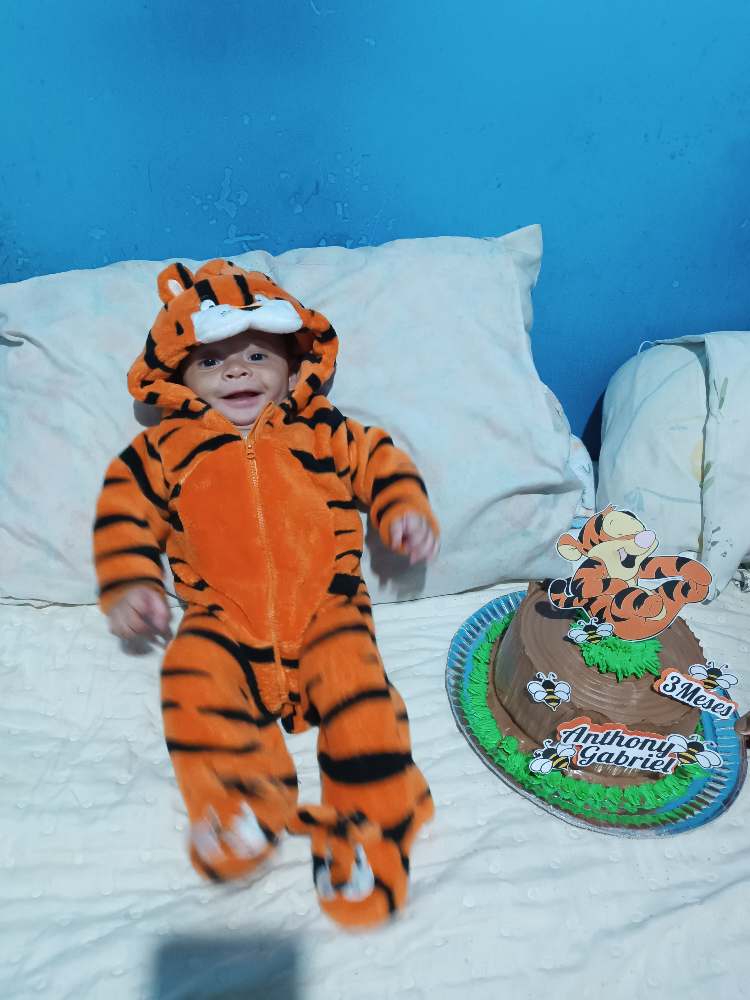

Mais de Nós
Agora vou contar com mais detalhes sobre nossas bagunças, nossas brincadeiras e até mesmo os nossos sentimentos.
A Distância
O Desafio de Deixar Ir
Quando fui dar à luz ao Anthony, eu estava trabalhando. Então, depois de cinco meses, precisaria voltar ao trabalho, e esse foi um dos maiores desafios para mim.
Eu não queria deixá-lo. Não queria passar horas fora pensando que não estava mais segurando-o, amamentando-o ou participando de momentos simples, como o banho. Esse sentimento me deixava muito triste.
A cada dia que se aproximava o momento de voltar ao trabalho, eu me sentia mais angustiada. Pensar que eu não estaria ali quando ele acordasse, mamasse ou precisasse de mim me deixava para baixo.
Mas, quando finalmente chegou a hora de voltar, tudo deu certo. Consegui trabalhar e, quando chegava em casa, o abraçava com toda a força do mundo.
Um registro desse momento

Meu Melhor Amigo
Um amor que cresce todos os dias
Anthony é o meu melhor amigo para a vida toda
Nós rimos das mesmas besteiras, dançamos juntos, fazemos uma enorme bagunça e é maravilhoso viver tudo isso ao lado dele.
Gosto muito de uma citação do livro 60 Dias de Neblina, de Erika Cortines.
Porque filhos aumentam o caos dos nossos dias, mas também nos salvam dele. A vida de mãe aperta, esmaga, mas também expande. Temos mais demandas e menos tempo, mas também temos um amor que não cabe no peito.
E por que trouxe essa citação? Porque, por mais que eu esteja cansada, estressada ou nervosa, ele sempre consegue trazer uma alegria tão grande que faz os problemas parecerem pequenos.
Toda vez que brigo com ele ou falo mais alto do que deveria, meu coração se enche de culpa. Dá até vontade de chorar. Ele entende que a bronca é para o bem, entende que não vou amá-lo menos por causa de um erro, mas, ainda assim, sinto que o magoei e fico muito triste. Ao mesmo tempo, sei que fiz o certo ao corrigi-lo.
Uma vez, cheguei em casa muito triste porque nada estava dando certo. Tudo parecia dar errado e eu não conseguia entender o motivo. Quando ele percebeu que eu estava chorando, simplesmente me abraçou. Foi um abraço tão gostoso e cheio de carinho que consegui dormir mais tranquila naquela noite.
Brincadeiras
Nossas pequenas aventuras
Anthony adora uma bagunça, e eu também. Quando nos juntamos, a diversão é garantida.
Já ouvi muitas vezes que eu deveria parar de mimá-lo, que ele precisa se virar sozinho, brincar sozinho para aprender, que me envolvo demais e que não sou uma boa mãe.
Mas eu penso diferente, mimar é fazer por ele algo que ele já consegue fazer sozinho, por exemplo, dar comida na boca quando ele já sabe comer, agora, dar carinho, amor, estar presente e brincar junto não é mimar, Isso é ser mãe e eu amo ser mãe e não estou dizendo que não erro, porque errar é humano. É claro que vou cometer muitos erros, afinal, ninguém recebe um manual de instruções sobre como ser uma boa mãe. Estou constantemente aprendendo e evoluindo, tanto como mãe quanto como pessoa.
Alguns dos nossos momentos
Nem Toda Fase São Flores
Os Dias Difíceis Também Nos Ensinam
Durante a gestação, eu peguei COVID-19 e foi muito difícil para mim.
Talvez você esteja se perguntando: Mas como você pegou COVID-19 em 2023, já com vacina e sem
pandemia?
Como mencionei anteriormente, eu trabalhava. Meu ex-chefe foi trabalhar infectado, sem máscara e sem se preocupar com os demais. Acabei contraindo a doença dele e, mesmo com todas as vacinas, fiquei muito doente. Isso acabou afetando o Anthony.
Anthony nasceu saudável, no tempo certo e com o peso adequado. Porém, por causa da COVID-19 durante a gestação, ele nasceu com atelectasia pulmonar. Segundo o site Rede D'or
a atelectasia é o colapso parcial ou total de uma parte do pulmão, em que os alvéolos (pequenos sacos de ar) se esvaziam e não se expandem adequadamente
isso fez com que ele tivesse a imunidade muito baixa e, por isso, nesses dois anos de vida, já precisou ser internado três vezes.
Depois de meses de tratamento e acompanhamento com especialistas, hoje ele vive muito bem. Em casos de gripes ou tosses mais fortes, faz uso de bombinha e medicamentos específicos para inalação.
As Páginas que Ainda Vamos Escrever
Eu e Anthony temos muitas histórias para contar e muitas aventuras para viver, isso é apenas um pequeno pedaço de tudo o que já vivemos e de tudo o que ainda vamos viver juntos, ainda virão muitos capítulos nessa jornada longa, desafiadora e incrivelmente bonita.
Eu só queria mostrar o quanto a nossa amizade é especial. A minha melhor amizade e essa eu sei que é verdadeira, eterna e para sempre.